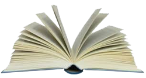

|
|
 |
2 luglio 1673
domenica
OCA
|
- prima di iniziare la lettura, si consiglia di leggere l'introduzione -
Palio1 riconosciuto dal Comune all'Oca2 e confermato dalla Compagnia del Beato Ambrogio Sansedoni, che inequivocabilmente le conferisce la vittoria: "Essendoci comparse al corso otto Contrade ed ottenne meritevolmente il Palio la Contrada dell'Ocha, ed il Premio del Masgalano quella della Civetta3, quale comparve con un' riguardevole Carro di musici, e strumenti tirato da sei cavalli. Li 2 Luglio 1673"4.
Notizie convalidate dal manoscritto del S.Maria della Scala5, ma soprattutto da un sonetto6, pubblicato nel 1673 dalla “Stamperia del Pubblico”7 e dal libro delle deliberazioni dell'Oca: "...il nostro Fantino, nominato Simone, habitatore di nostra Contrada s'affaticò tanto, e si portò così bene, che fu giudicato universalmente, che per la sola industria del Fantino, che menava molto bene di sferza, e no per la velocità del cavallo fusse stata nostra la Vittoria, essendosi adoperato in maniera, che ne riportò meritatamente la comune acclamatione, gridando tutti Viva l'Oca, Viva Mone"8.
Questo è dunque uno dei pochi Palii dei quali sappiamo l'identità del fantino vincitore.
Riguardo al suo cognome, azzardiamo che fosse "Mastacchi", in quanto compatibile con quello dell'unico "Simone" presente negli Stati delle Anime del 1673 della cura di S.Antonio in Fontebranda9.
Faceva il locandiere10 e, da quanto appare dalla Biccherna11, era nato il 26 novembre 1631, figlio del mugnaio Giovan Battista e di Caterina Millefanti12.
Oltre all'Oca, fra le otto partecipanti vi furono anche il Leocorno13 e l'Onda14 che subordinò la partecipazione alla condizione che fossero state presenti le Contrade sue aggregate, una delle quali era appunto l'Oca.
Nel 1673 si assistè al tentativo di alcuni bottegai di via del Porrione, sobillati probabilmente dagli abitanti dei rioni confinanti, di disunire la Contrada della Torre, che il 13 giugno si rivolse alla Balia con un memoriale, "nel quale espose come l'homini di detta Contrada hanno hauto notizia che la strada di San Martino ed altre voglino farsi una Contrada di per se e disgregarsi da loro"15.
Per porre fine alla controversia vennero incaricati i Signori Antonio Landucci e Giovan Battista Piccolomini, affinché "sentita l'un e l'altra parte riferischino il lor parere".
Nonostante tutti i loro sforzi, la tregua fu fragile e, come vedremo, si interruppe due anni più tardi, creando non pochi problemi agli organizzatori della Festa.
NOTE:
[1] ASS, Biccherna 880, 14 giugno 1673, c. 18
[2] ACOc, Deliberazioni 1667-1745, libro C, c. 20v
[3] "Minerva rappresentata in Carro dalla Civetta alle bellissime dame senesi" è il titolo di un sonetto stampato nel 1673 per l'occasione, che fa parte di una collezione privata.
[4] ASS, Patrimonio Resti 2, Compagnia del Beato Ambrogio Sansedoni, c. 173 e 173v
[5] ASS, Ospedale S.Maria della Scala 183, Ricordi e memorie 1453-1765, Tomo II, ms, c. 112
[6] Giunone festeggiante per le vittorie della Contrada dell’Oca accompagnata dalle sue Ninfe e rappresentata in carro.
[7] ACOc, sonetto 1673
[8] ACOc, Deliberazioni 1667-1745, libro C, c. 20v
[9] AAS, Stati delle Anime di S.Antonio in Fontebranda 2813, anno 1673, c.s.n.
[10] Fino agli inizi dell’Ottocento, le professioni più comuni dei fantini erano quelle di osti, macellai e vetturini.
[11] ASS, Biccherna 1141, c.66
[12] ASS, Battezzati San Giovanni Battista 113, 26 novembre 1631
[13] ASS, Patrimonio Resti 769, Compagnia di S.Giovanni Battista in Pantaneto, c. 115
[14] ACOn, Libro secondo di deliberazioni 1604-1673, c. 94v
[15] ASS, Balia 204, cc. 134v e 134v

ABBREVIAZIONI BIBLIOGRAFICHE


RIEPILOGO
VITTORIE
DAL 1633
AL 1691


|
|
|